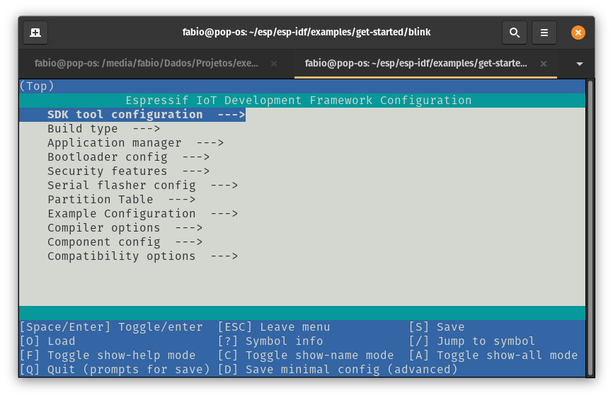
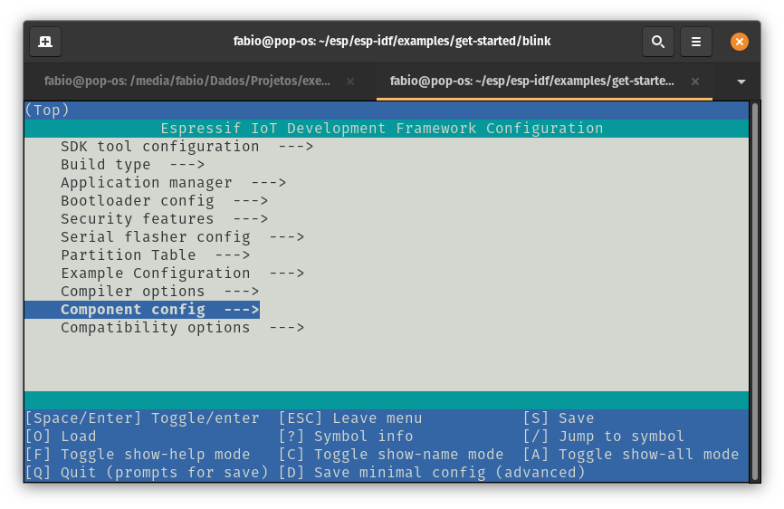
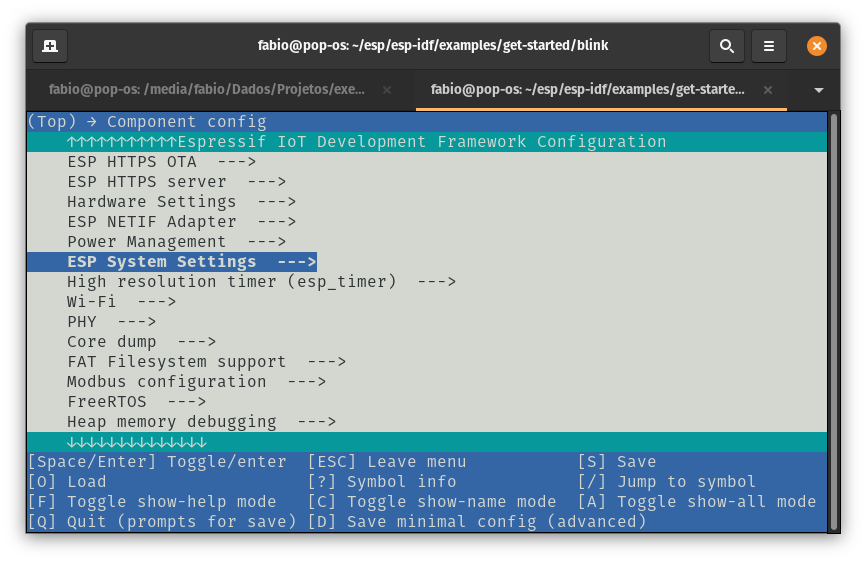
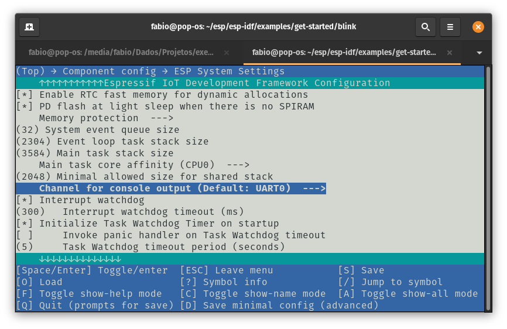
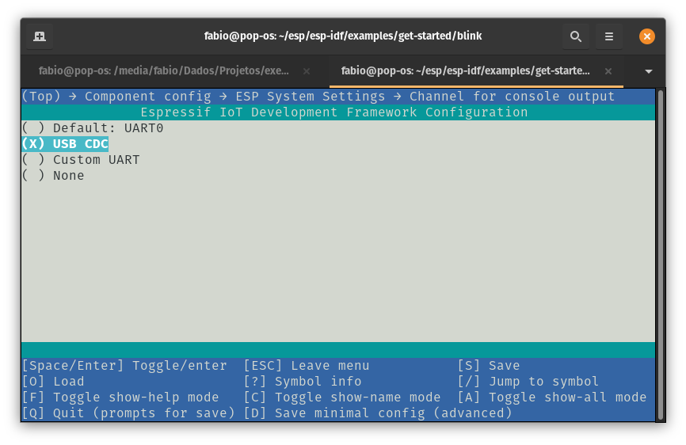

Primeiros Passos
Este documento tem como objetivo ajudá-lo a configurar o ESP-IDF (Espressif IoT Development Framework) para trabalhar com a Franzininho WiFi que usa o ESP32-S2 da Espressif.
Ao final, faremos um exemplo simples para compilar, gravar e monitorar usando o ESP-IDF, assim, garantiremos que tudo estará funcionando.
Introdução
Para essa configuração, vamos instalar o ESP-IDF e usá-lo através de linha de comando. Caso você queira usar o IDF integrado a ambientes de desenvolvimento integrado (IDE) como VScode e Eclipse, confira os seguintes links:
Você poderá instalar o ESP-IDF no seu sistema operacional preferido (Linux, Windows, macOS).
Para a experiência completa, você precisará de uma placa Franzininho WiFi, Computador: com Windows, Linux ou macOS
Passo 1 - Instalação dos pré-requisitos
Algumas ferramentas precisam ser instaladas no computador antes de prosseguir para as próximas etapas. Siga os links abaixo para obter as instruções para o seu sistema operacional:
É muito importante a instalação de todos os pré-requisitos.
Passo 2 - Instalação do ESP-IDF
Nessa etapa vamos instalar o ESP-IDF e conjunto de ferramentas e bibliotecas. Vamos usar o código mantido pela Espressif no repositório do ESP-IDF
O ESP-IDF é o framework oficial da Espressif para o desenvolvimento de aplicações parar toda a família ESP32. O procedimento apresentado aqui servirá para trabalhar com toda a família ESP32. Porém vamos dar foco ao ESP32-S2 que é usado na Franzininho WiFi.
Linux e macOS
Abra o terminal e execute:
mkdir -p ~/esp
cd ~/esp
git clone --recursive https://github.com/espressif/esp-idf.git
O ESP-IDF será baixado no seguinte repositório ~/esp/esp-idf.
Windows
Além de instalar as ferramentas, o ESP-IDF Tools Installer para Windows apresentado no passo 1 ele também baixa uma cópia do ESP-IDF. Dessa forma você não precisará baixar o ESP-IDF agora, se já tiver baixado anteriormente junto aos pré-requisitos.
Se desejar fazer o download do ESP-IDF sem a ajuda do ESP-IDF Tools Installer, consulte estas instruções.
Instalando O ESP-IDF e ferramentas
Além do ESP-IDF, você também precisa instalar as ferramentas usadas pelo ESP-IDF, como compilador, depurador, pacotes Python, etc.
Windows
O ESP-IDF Tools Installer para Windows apresentado no passo 1 instala todas as ferramentas necessárias.
Se você deseja instalar as ferramentas sem a ajuda do ESP-IDF Tools Installer, abra o Prompt de Comando e siga estas etapas:
cd %userprofile%\esp\esp-idf
install.bat
Ou no Windows PowerShell
cd ~/esp/esp-idf
./install.ps1
Linux e macOS
No Linux ou macOS há um script para instalação.Abra o terminal e execute:
cd ~/esp/esp-idf
./install.sh
Configurando as variáveis de ambientes
As ferramentas instaladas ainda não foram adicionadas à variável de ambiente PATH. Para tornar as ferramentas utilizáveis na linha de comando, algumas variáveis de ambiente devem ser definidas. ESP-IDF fornece alguns scripts que ajudam nesse processo.
Windows
O ESP-IDF Tools Installer para Windows cria um atalho “ESP-IDF Command Prompt” no menu Iniciar. Este atalho abre o Prompt de Comando e configura todas as variáveis de ambiente necessárias. Você pode abrir este atalho e prosseguir para a próxima etapa.
Caso não funcione e você precise configurar manualmente, execute os seguintes comandos:
Prompt de Comando:
%userprofile%\esp\esp-idf\export.bat
Windows PowerShell:
.$HOME/esp/esp-idf/export.ps1
Linux e macOS
No terminal execute:
. $HOME/esp/esp-idf/export.sh
Você precisa fazer isso toda vez que iniciar o terminal para usar o ESP-IDF.
Passo 3 - Criando um novo projeto
Agora que já temos as ferramentas instaladas, vamos fazer um exemplo para validar o funcionamento das mesmas. Vamos executar o exemplo blink que já vem no IDF.
Copiando um projeto exemplo
Vamos copiar o projeto blink para preservarmos o exemplo presente na pasta do IDF:
Windows
cd %userprofile%\esp
xcopy /e /i %IDF_PATH%\examples\get-started\blink blink
Linux e macOS
cd ~/esp
cp -r $IDF_PATH/examples/get-started/blink .
Fique a vontade para testar os outros exemplos também.
O sistema de compilação ESP-IDF não oferece suporte a espaços nos caminhos para o ESP-IDF ou para projetos.
Configuração
Agora vamos configurar o target para qual será compilado e já fazer uma configuração no menuconfig. No nosso caso vamos trabalhar com o ESP32-S2:
Windows
cd %userprofile%\esp\blink
idf.py set-target esp32s2
idf.py menuconfig
Linux e macOS
cd ~/esp/blink
idf.py set-target esp32s2
idf.py menuconfig
Será aberto o menuconfig: 
Acesse a opção Component config ---> 
Em seguida ESP System Settings ---> 
Agora selecione Channel for console output (Default: UART0) ---> 
E por fim, selecione (X) USB CDC: 
Salve(S), Enter, enter, Saia do menu(ESC)
Essa configuração permitirá que usemos a USB no próximo upload.
Sempre que iniciar um projeto novo faça essas configuração para que continue usando a USB como interface de programação.
Para mais detalhes acesse:
Compilando o projeto em modo DFU
A primeira compilação nós vamos fazer usando o modo DFU, que já vem por padrão no ESP32-S2 permitindo o upload através da USB:
Para crie a imagem DFU:
idf.py dfu
A primeira compilação pode demorar um pouco. Da até pra ir pegar um café ;)
Após a compilação, conecte a Franzininho WiFi no computador. Antes de fazermos o upload é necessario entrar no modo DFU. Para entrar no modo DFU pressione as teclas na seguinte sequencia:
- pressione e segure a tecla BOOT
- pressione rapidamente e solte a tecla presente
- solte a tecla BOOT
Dessa forma a placa entrará no modo DFU e poderá receber o firmware através da USB.
Para fazer a gravação, digite:
idf.py dfu-flash
Caso tenha permissão de acesso a porta USB, acesse esse link com as instruções de configurações
Após alguns segundos a placa estará gravada.
Compilação, gravação e monitor em modo normal
Agora você poderá compilar, gravar e monitorar usando a porta USB. Esse processo é identico ao que fazemos para desenvolver com o ESP32:
Compilar:
idf.py build
Gravar:
idf.py -p PORT [-b BAUD] flash
Monitorar:
idf.py -p /dev/ttyUSB0 monitor
Maravilha, você configurou o ambiente para trabalhar com o ESP-IDF.
Caso queira trabalhar com a extensão para VSCODE, confira o video: